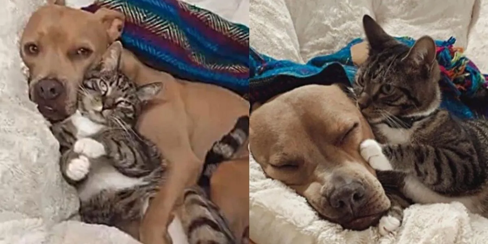

Llego el Amor a Primera Vista
" Era un gato que peliaba hasta con el perro del vecino, pero todo cambio cuando llego el."
Era un gato callejero muy territorial que peleaba con todo aquel que se atreviera a invadir su espacio. No importaba si se trataba de otro gato o incluso del perro del vecino, él estaba listo para pelear. Pero todo eso cambió cuando llegó él, un Pitbull macho muy tierno y amigable que se acercó al gato con curiosidad y ganas de jugar.
Foto tomada de:https://www.bunko.pet/__export/1664492546691/sites/debate/img/2022/09/29/perro_y_gato_mejores_amigos.jpg_759710130.jpg
El gato estaba en la calle, recién llegado de una pelea cuando él lo encontró. Al principio, el gato se puso a la defensiva y preparado para pelear, pero cuando el Pitbull se acercó con ternura y cariño, algo cambió dentro de él. Descubrió que el Pitbull no estaba ahí para pelear, sino para hacer amistad.
A partir de ese momento, el gato y el Pitbull se convirtieron en los mejores amigos. Corrían y jugaban juntos, compartían momentos de ternura y cariño, y se protegían mutuamente. La familia del gato lo notó y decidió adoptar al Pitbull, convirtiéndolo en el nuevo miembro de la familia.
El Pitbull se adaptó rápidamente a su nuevo hogar y a su nuevo amigo, y la familia del gato se sorprendió de lo tierno y amoroso que era su nuevo integrante. El gato, que antes no toleraba la presencia de ningún otro animal en su territorio, ahora tenía a su mejor amigo a su lado, y juntos compartían momentos de felicidad y complicidad.
Con el tiempo, el gato y el Pitbull se hicieron mayores, pero su amor y amistad no disminuyeron. La familia los cuidaba y los amaba, y ellos correspondían con el mismo amor y cariño. A pesar de las diferencias entre su especie y tamaño, ellos demostraron que el amor no tiene barreras y que los lazos de amistad pueden surgir en cualquier momento y en cualquier lugar.
La historia del gato y el Pitbull es un ejemplo claro de que el amor y la amistad pueden surgir de manera inesperada y en circunstancias poco comunes. A veces, solo se necesita un poco de curiosidad, ternura y cariño para que se produzca un vínculo especial. Y, en este caso, la familia del gato tuvo la valentía y el amor para adoptar al Pitbull y darle una oportunidad de ser parte de su hogar.
compartelo con tus amigos en tus redes sociales: